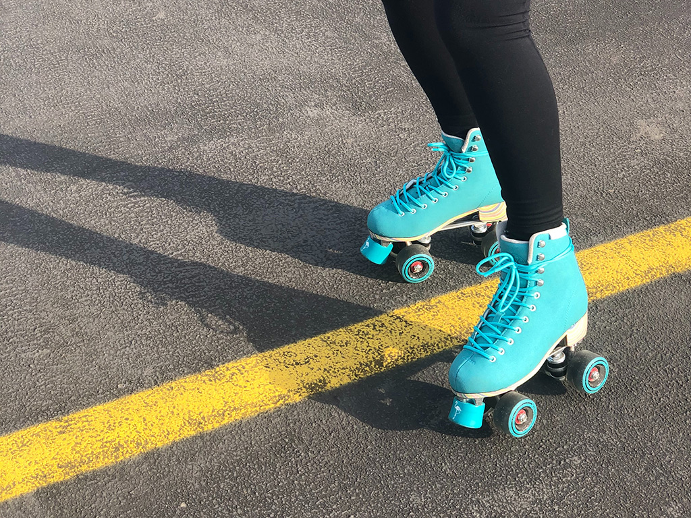

After getting your first pair of roller skates, you have propably tried them on inside your house. After initial struggle, you have managed to find some balance and even enjoyed the new activity. Taking your skates out in the streets is naturally your next step.
Indoor roller skating, allthough famous in many countries, is not practised in Finland. Here we only skate outside. Skating outside involves lot more practise and being constantly alert. Do not be afraid of the rough surfaces, with time you will master them.
By keeping consistent with your practise and believing in yourself, you can find that skating outside is so much more fun than inside roller skating. Outdoor skating gives you so much more variety!
Getting ready
Before taking your skates out on the streets, you have to make sure that the skates are properly set for outdoor skating.
Check that the wheels on your skates are suitable. Outdoor wheels should be soft enough, so that you will not trip on small rocks. Remember to also check that the wheels are spinning freely. In case the wheels feel stuck, you can ever so slightly loosen them up.
Never skate without proper equipment. This means wearing a skating helmet and protectors. Skating is a dangerours sport and as a beginner you will fall. A lot. So always wear your equipment and keep yourself protected.
Just go for it!
In the beginning it is scary, but the only way to learn is to practise. Practise keeping your balance first. When you feel off balance just squat down. Start slowly shifting you weight from side to side.
 Roller skating outside takes practise but is worth the effort.Allow yourself some time to learn. Don't be miscouraged if you suck at it in the beginning. No one is a master in the beginning. Just keep on practising and you fill fall in love with your new hobby in no time!